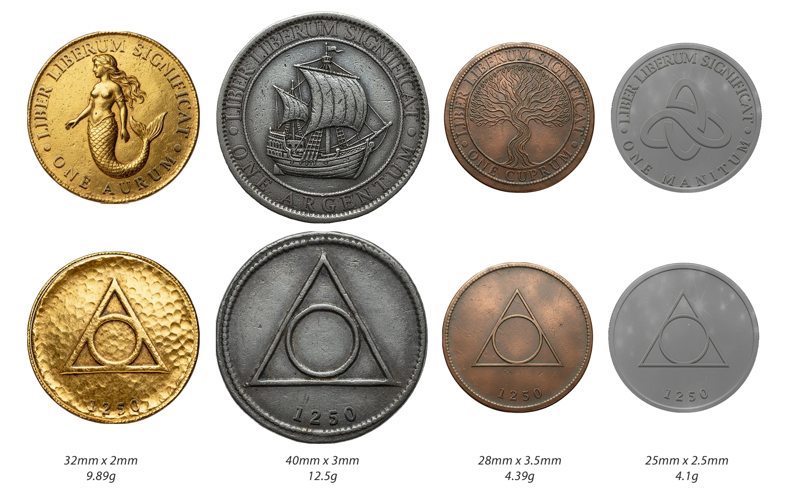
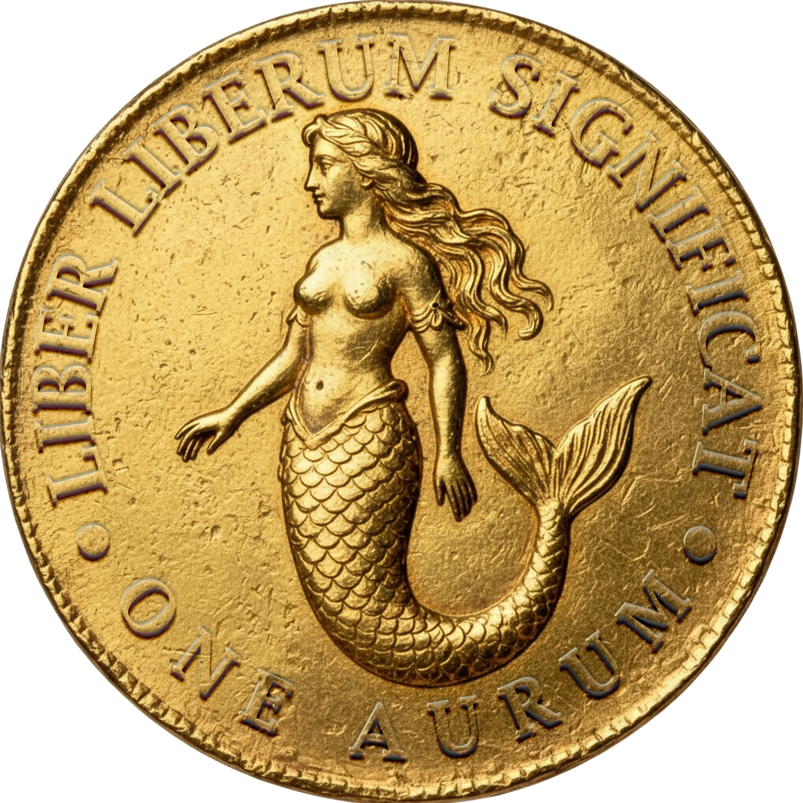
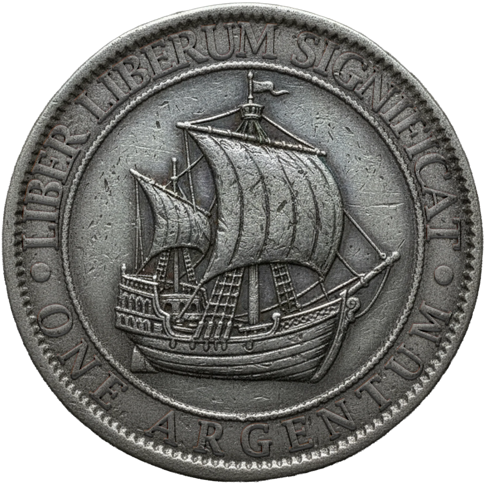
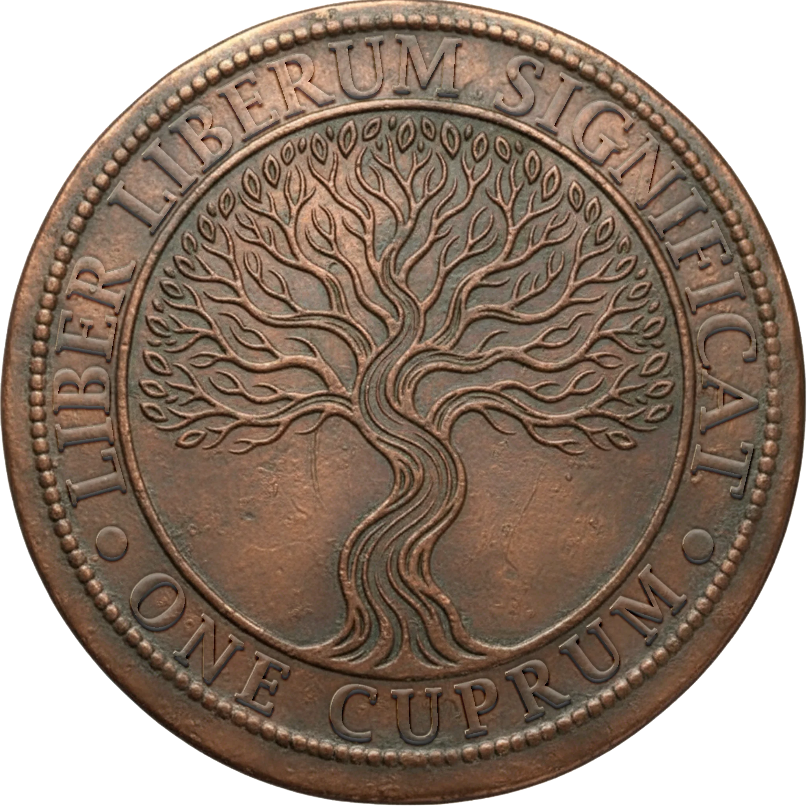
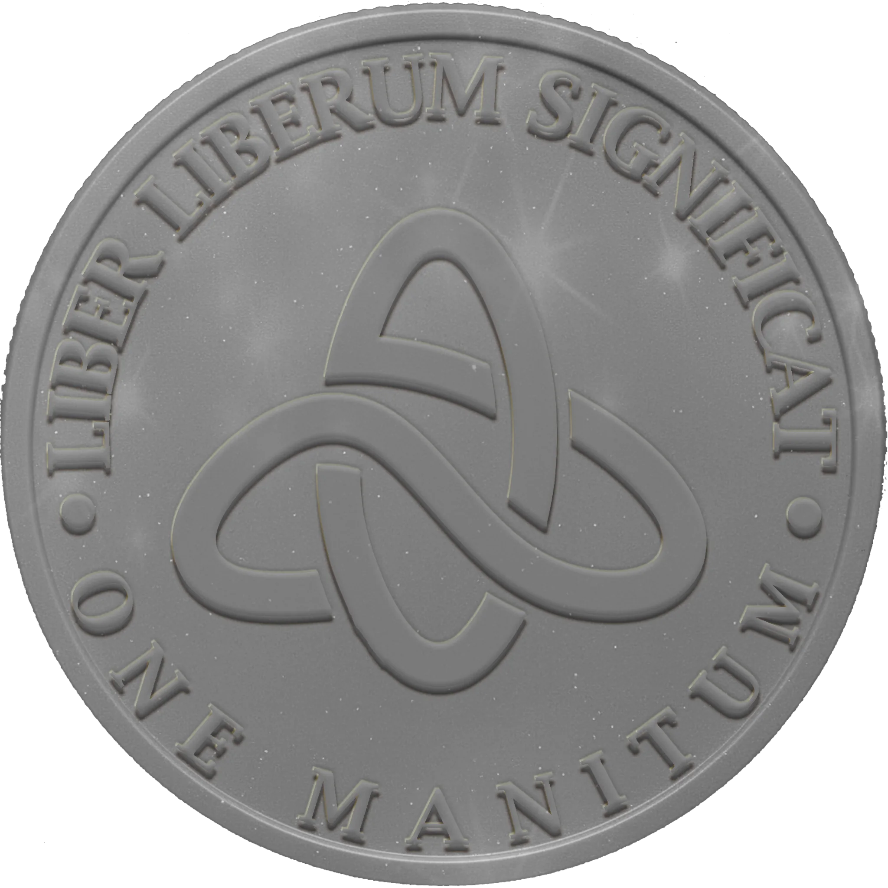

Although bartering is still a common occurrence, especially among the disadvantaged, Freeport does use currency. Foreign currency is usually also accepted but exchange rates can vary. Best to get the currency assessed and changed at the Mint near the Grand Office.
All Freeport coinage is emblazoned with the motto “Liber Liberum Significat” or “Freedom means Free”. Obverse faces on the coins are the symbol for the triumvarate, a triangle with a circle inscribed, signifying unity through diverse government and stamped with the date of mint.
Inert manite is a heavy plastic-like substance, almost like a high quality poker chip. It is a dull gray but sparkles in the sunlight. It is a bi-product of mana mining and refinement and basically worthless although is used to make the base Manitum coin.
All currency that is minted is imbued with a mana signature courtesy of the Conclave. This mana signature is easily checked by a reading device and conveniently sold by the Conclave to businesses. If a coin is significantly shaved or melted down, the signature vanishes. Smaller businesses can take their chances, of course, but risk dealing with counterfeit or altered currency.
Relative Sizes

Details
| Image | Name | Nickname | Metal | Value | Denomination |
|---|---|---|---|---|---|
 | Aurum | Singular: Oar Plural: Oars | Gold | ¤10g | o |
 | Argentum | Singular: Gent Plural: Gents | Silver | ¤100c | g |
 | Cuprum | Singular: Cup Plural: Cups | Copper | ¤10m | c |
 | Manitum | Singular: Man Plural: Men | Inert Manite | ¤1m | m |
In common practice, the symbol ¤ is used to denote prices with the amount followed by the denomination. For example, to write that something costs 10 gents you would write ¤10g
Money Beyond Freeport
Freeport mints. Mososi mints. Nysis cannot and Buralia does not, and in both cases the reason is constitutional rather than economic.
Why the Freeport coin wins
The signature is the whole of it. A Conclave working is laid on every piece at the Mint, a reader costs a shopkeeper about four gents and is sold by the order to anyone who asks, and a coin either answers the reader or it does not. Shave it, sweat it, plate it or melt it and the signature is gone, which means a Freeport coin is the only money in this region that proves itself without anybody’s word.
Everything else has to be trusted, weighed, or assayed. That is why a Nyssian urbestro, a Mososi prefekt and a Buralian governor who agree on nothing else will all take the same silver, and it is worth noticing what the cheapest of those coins is made of. The Manitum is pressed from inert manite, the grey waste the refineries cannot sell, and it is worth one man because the Conclave signed it. The order takes a substance with no value and makes it the smallest reliable thing in the region, and charges Freeport for doing it.
Mososi: the round
Mososi mints because minting is process, and the rondo is the country in a disc.
It is silver, broad and thin, struck at Typpe under the inspectorate, milled at the edge so that clipping shows. Every issue carries the year and the mark of the assayer who passed it, the assay ledgers are open to anyone who walks in and asks, and a merchant who wants to know the fineness of the 214 issue can go and read it. There is no magic on it anywhere. Mososi’s guarantee is a man’s name, a rotation, and a book.
It circulates through the terraces, the Termin wagon yards, the Lokigi sheds and half the Nyssian interior, and it trades in Freeport at about ninety-four cups against a gent’s hundred. That discount is a permanent grievance at Typpe. The coin is honest, its ledgers are public, and it is worth less than a Freeport gent for the reason that honesty which has to be checked is cheaper than honesty you can read off the metal.
Nysis: everything, by weight
Nysis is the richest country here and has never issued a coin, because issuing one means answering two questions the confederation exists in order not to ask: whose device goes on it, and how many shares there are.
Five shares, five towns was the only motto ever proposed that mentioned the money, and it failed. The chevayo does not mention the money. A currency mentions nothing else.
So what circulates in Nysis is whatever came through the door. Freeport coin on the coast and in any transaction with a stranger. Mososi rounds around Termin and up through Fluenti, where the timber is sold south. Foreign silver off the Ostrea and Piscis quays, which is where the trouble starts. Every Nyssian town of any size keeps a scale at the market and a board beside it listing what passes and at what, the boards disagree with each other by a few cups, and they are revised by the urbestro without notice. A carter crossing the country changes money four times without crossing a border once.
The joke that Nyssians do not make about themselves is that the payment holding the confederation together arrives every year in another city’s coin.
Buralia: goods, and the end of a spear
The empire is a hundred and forty years old and has never struck a coin.
It has not needed one. Tribute is in kind and always was: obsidian, sulphur, crystal, hides, horn, and what the fen parts with. The archive at Altiplano counts in things rather than in sums, and counts them very well, in head of cattle and weight of glass and tale of skins, which is a better instrument for the purpose than money would be and does not require a mint. A mint would also require a building, and a court that travels does not put a building at the middle of itself.
Below the tribute, the march trades goods for goods, and where that fails it is settled the way everything out there is settled. Coin is a frontier instrument. Freeport silver passes at Mons and on the wharf at Intersang because the ash country needs something a Mososi barge master will take, so the working money of a frontier four hundred miles from Freeport is Freeport’s.
What foreign silver reaches the heartland goes into the archive as bullion. The Pura Ecclesia pays its mission rent at Spero punctually and in silver, and in the ledger that rent is entered as a weight, not as a sum.
The real and the round
The Ramagian real is silver, the same colour as a Mososi round, within a hair of the same width, and within a few grains of the same weight. It is about three parts silver in four. The round is fifteen parts in sixteen. Taken at a round’s rate in poor light, a real costs the man holding it roughly three cups in every ten.
Two tells, and both work on a table. The round is milled at the edge and the real is plain. And a round rung on wood carries; a real goes dead in the hand. The Mint will settle it for a fee, and there is a clerk at the Grand Office who can do it by ear across a room and is not always available.
Why the two coins are so alike is not known. Ramage has been asked, through the only channel there is, and answered that its coin has been struck to that standard for a hundred and forty years. No Ramage manifest has ever been found wrong at a rummage, in the whole of the Grand Office’s book, and the Office has gone looking twice.
On the docks it comes down to three words. Ring it first.
Pricing Guide
Based on the economic data from Freeport’s currency system and salary structures, here are typical prices for common goods and services:
Food & Drink Prices
Street Food & Basic Meals:
- Meat pie or hand pastry: ¤2-5m
- Bowl of stew with bread: 5-8 men
- Grilled fish on stick: 3-6 men
- Loaf of bread: 2-4 men
- Cheese wedge: 3-5 men
- Dried meat (jerky): 4-7 men per portion
Market Goods (raw ingredients):
- Fresh fish (whole): 1-3 cups (depending on size/quality)
- Chicken or small game: 2-4 cups
- Vegetables (per pound): 5-15 men
- Fruit (per piece or pound): 8-20 men
- Sack of flour (10 lbs): 3-5 cups
- Ale or beer (personal keg): 2-4 cups
- Wine (bottle, common): 5-10 cups
- Wine (bottle, quality): 2-5 gents
Tavern & Inn Food:
- Mug of ale: 3-6 men
- Cup of wine (house): 8-15 men
- Cup of wine (quality): 3-8 cups
- Hot meal (stew, bread, cheese): 1-2 cups
- Hearty supper (roast, sides, bread): 3-6 cups
- Fine dining meal: 1-3 gents
Lodging Prices
The Stews (poorest quarter):
- Flophouse mat: 1-3 men per night
- Shared room (4-6 beds): 5-10 men per night
- Small private room: 2-4 cups per night
Shyside/South Wards (working class):
- Shared room (2-4 beds): 2-4 cups per night
- Private room (basic): 5-8 cups per night
- Private room (clean, with basin): 1-2 gents per night
Market District/Riverside (middle class):
- Private room (comfortable): 2-4 gents per night
- Private room (quality furnishings): 5-8 gents per night
- Suite (sitting room + bedroom): 10-15 gents per night
West March/Azure Court (wealthy quarter):
- Quality suite: 1-2 oars per night
- Luxury suite: 3-5 oars per night
- Exclusive apartments (visiting dignitaries): 5-10 oars per night
Long-term lodging:
- Stews room rental: 2-5 gents per month
- Shyside apartment: 10-20 gents per month
- Riverside house rental: 30-60 gents per month
- West March townhouse rental: 100-300 gents per month
Services & Entertainment
Baths & Grooming:
- Public bath (Stews): 2-5 men
- Bathhouse (with soap, towel): 3-6 cups
- Quality bathhouse (hot water, attendant): 1-2 gents
- Barber/shave: 5-10 men
- Haircut and grooming: 2-5 cups
Entertainment:
- Street performer tip: 1-5 men
- Tavern musician cover: 5-10 men
- Theater performance (cheap seats): 3-8 cups
- Theater performance (good seats): 2-5 gents
- Courtesan (evening, Stews): 5-15 cups
- Courtesan (evening, quality): 2-10 gents
- Gambling table buy-in (low stakes): 5-20 cups
- Gambling table buy-in (high stakes): 1-10 gents
Transport & Labor:
- Runner delivery (within district): 2-5 men
- Runner delivery (cross-city): 1-2 cups
- Porter/day laborer (half-day): 3-8 cups
- Cart rental (day): 1-2 gents
- Small boat ferry across canal: 2-4 men
- Horse rental (day): 3-8 gents
Goods & Equipment
Clothing:
- Used/patched clothing: 5-20 cups
- Basic work clothes: 1-3 gents
- Merchant’s outfit: 5-15 gents
- Fine clothing: 2-5 oars
- Noble’s garb: 10+ oars
Tools & Trade Goods:
- Simple tool (hammer, knife): 3-10 cups
- Quality tool set: 2-8 gents
- Lantern: 5-15 cups
- Oil (flask): 3-6 men
- Rope (50 ft): 1-2 gents
- Canvas tarp: 5-15 cups
- Charcoal (15kg): 5-10 cups
Weapons & Armor (legal purchases):
- Club or cudgel: 2-5 cups
- Dagger: 1-3 gents
- Short sword: 5-15 gents
- Quality blade: 2-5 oars
- Leather armor: 10-30 gents
- Crossbow: 5-10 gents
- Bolts (10): 5-15 cups
Reading Materials:
- Broadsheet/news: 1-2 men
- Pamphlet: 5-15 men
- Common book: 3-10 gents
- Quality tome: 2-10 oars
- Rare manuscript: 20+ oars
Bribes & Illicit Services
Common Bribes:
- Guard to look away (minor): 5-20 cups
- Guard to provide information: 1-5 gents
- Inspector cursory inspection: 2-10 gents
- Bridge guard at night: 5-20 cups
- Sergeant Drumph (notorious gambler): 10-50 gents depending on favor
Black Market:
- Stolen goods fence (20-40% of value): varies
- Forged documents: 5-20 gents
- Smuggled contraband: 2-10x normal price
- Assassination contract: 50-500+ gents depending on target
Magical Items & Services
Conclave Services:
- Mana signature reader (device): 10-30 gents
- Minor healing potion: 5-15 gents
- Scroll (minor spell): 10-50 gents
- Magical consultation: 5-20 gents
- Enchanted item (minor): 10-100 gents
- Enchanted item (significant): 5-50 oars
Price Variations
Quality modifiers:
- Stews quality: 50-70% of listed prices
- Standard/Market quality: listed prices
- Riverside/middle-class quality: 150-200% of listed prices
- West March/luxury quality: 300-500%+ of listed prices
Situational modifiers:
- During festivals or busy trade season: +20-50%
- During shortages or blockades: +50-200%
- Flood season in Stews: -20-30% (goods damaged)
- Negotiation/haggling: -10-30% (depending on skill)
- Buying from foreigner/non-citizen: +10-20%